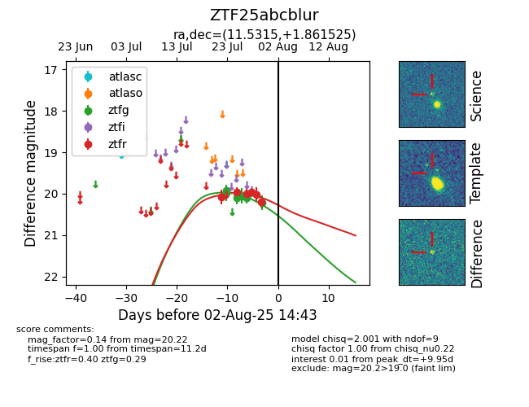

Target ZTF25abcblur at 2025-08-02 14:43, see:
FINK: fink-portal.org/ZTF25abcblur
Lasair: lasair-ztf.lsst.ac.uk/objects/ZTF25abcblur
ALeRCE: alerce.online/object/ZTF25abcblur
alt names
ZTF25abcblur (ztf,fink)
coordinates:
equatorial (ra, dec) = (11.5315,+1.86152)
galactic (l, b) = (120.1949,-60.98199)
photometry
last ztfg=20.22, ztfr=20.20
8 ztfg, 6 ztfr detections
